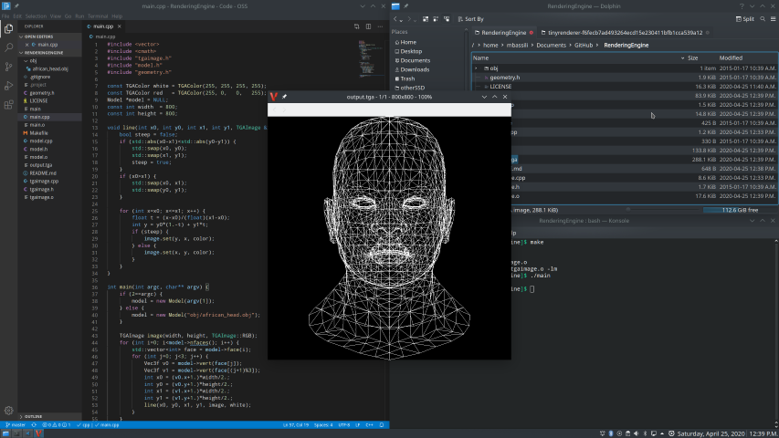

Computer Graphics have become a prominent and essential part of many industries today from entertainment to education, and medicine to engineering.
This page offers general information about the different applications of Computer Graphics in a variety of industries.
The evolution of Pokemon Graphics
Image Credit:
Reddit
Here are some examples of applications of Computer Graphics:
Films/TV/Special Effects: Graphics plays a large part in the film industry specifically in animation and special effects.
Modern films are utilizing Computer Generated Imagery or CGI for short, to create very realistic environments, characters, and visual effects. Many prominent films such as
The Avengers, Toy Story, and Avatar have heavily utilized CGI and earned positive feedback from viewers. Some notable demonstations of different types of animations can be
seen in the Netflix series Love Death + Robots.
Video Games: Game Development is another industry that evolves the use of graphics and is one of the largest consumer industry.
Early implementations of video games from the 90s involve 2D animations that were pre-recorded such as the early Mortal Kombat Series.
From top-down perspectives, pixel art, and text based graphics, the game-development industry has evolved enormously in the recent years. Nowadays this industry employs
advanced 3D graphics to create immersive and interactive worlds, making sure everything is visibly pleasing to the consumer. Notable examples are the Death Stranding Series
CAD-CAM & Design: Computer-Aided Design and Computer-Aided Manafacturing relies on graphics to create models, simulate, and test products.
Used by engineers, these systems allow for increase in productivity by rapidly increasing design interations and digital prototyping, it provides better visualization and perspective of their creations
before production.
Medical Imaging: Graphics are also used in the medical field, such as in techniques like MRIs, CT scans, and ultra sounds. These may utilize
computer graphics to visualize and reconstruct the body structure of medical patients and allowing for thorough examinations. The positive impact is that it helps assist doctors in diagnosis, planning for operations
and provides an environment for education such as studying the anatomy of the human body.
Virtual Reality: Graphics play a large role in the application of Virtual Reality. A notable example are flight simulations, which allow future pilots to
visualize realistic environments in order to train and further educate themselves in their field.
Any Display!: Smartphone interfaces to car dashboard screens, computer graphics are seemingly everywhere. They are heavily shaping the way we interact
with technology.
Below is a video demonstrating the rendering of visual effects for Marvel Studios' The Avengers

Rendering using OpenGL engine written in C++
Image Credit:
OpenGL.bassi Visual of CAD/CAM
Image Credit:
CAD/CAM
Artificial Intelligence
With the ever so growing utilization of graphics, Artificial Intelligence has evolved to become one of the pioneers of graphics applications. It is hastily
shifting the meta of computer graphics from manual labor work in creating visual imagery to the effortless collaboration with generative models. In other words, the user may just prompth the
graphic and the AI does all the work. This has led to some underlying arguments on whether it is good for many industries because on one hand it heavily increases productivity but on the
it reduces the essential human-to-computer communication it originally was designed for. Check out the future technology page to read more about what AI is doing to change Computer Graphics.